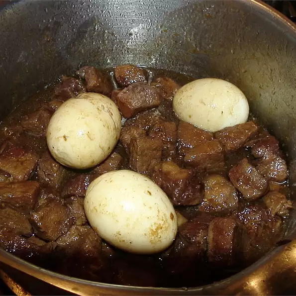

Pork & Chicken Adobo Recipe

Description
This recipe is adapted from a famous Filipino restaurant in Manila, Philippines. The longer you marinate in the refrigerator, the better it gets! This is one dish that doesn't spoil right away. Best served hot over steamed rice.
Ingredients
- 1 ¼ pounds boneless pork loin roast, cut into 2-inch pieces
- 1 ¼ pounds boneless, skinless chicken thighs, trimmed and cut into 2-inch pieces
- 2 teaspoons salt, or amount to taste
- ½ tablespoon black peppercorns, coarsely ground
- 2 tablespoons crushed garlic
- 2 bay leaves, torn
- 1 cup white vinegar
- ¼ cup soy sauce
- 1 tablespoon vegetable oil
- 2 cloves garlic, smashed
Directions
- Season pork and chicken with salt and pepper and place in a stock pot. Rub with crushed garlic and torn bay leaf, and coat with vinegar and soy sauce. Cover, and marinate in the refrigerator at least 2 hours or overnight.
- Bring meat and marinating liquid to a boil in a cast iron casserole or Dutch oven. Reduce heat to a simmer and cook until meat is tender, about 30 minutes. If necessary, add water to prevent sauce from drying out.
- Strain liquid from meat and set aside; discard bay leaves. Heat 1 tablespoon oil in a large skillet over medium-high heat. Brown the pork and chicken on all sides; reduce heat and stir in remaining 2 cloves of smashed garlic. Cook and stir for 2 minutes more. Pour in reserved cooking liquid, and continue simmering until sauce is slightly thickened. Serve hot.
Back to Main